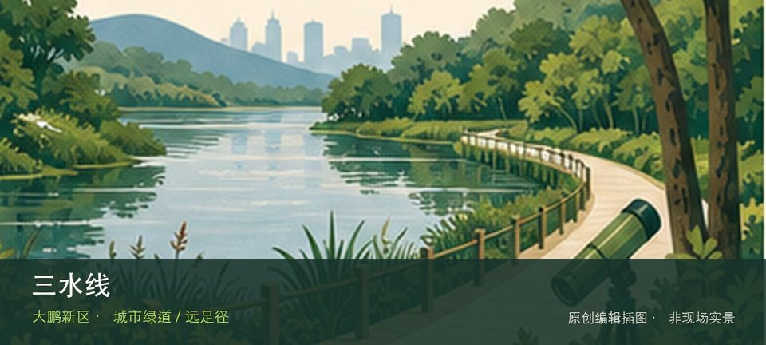

适合谁
适合有基础步行体力、愿意按天气调整路线的人；行动不便者应只选择平缓开放段。

SHENZHEN GUIDE · 316
白沙湾公园至水祖坑 · 城市绿道 / 远足径
三水线位于白沙湾公园至水祖坑，约18公里、累计爬升高的经典穿越线经过连续山峰，是需要完整补给、导航和退出方案的挑战路线。与同类地点相比，最值得停下来的差异落在连续山脊与108座山峰意象和约1600米累计爬升这两个具体节点上。现场不必追求一次走完，先在连续山脊与108座山峰意象与约1600米累计爬升之间确定主线，再按体力、日照和天气保留折返方案。山地、滨水或林下路面会随降雨改变，当天预警和开放边界始终比旧轨迹更优先。
WHY GO
适合有基础步行体力、愿意按天气调整路线的人；行动不便者应只选择平缓开放段。
从白沙湾公园出发前先确认水祖坑端接驳，并保存官方轨迹、补给与下撤点；没有连续山地经验、足量饮水或离线导航时不走全线。
白沙湾公园和水祖坑是异地两端，出发前必须在深圳远足径官方导览核对轨迹、下撤点与两端交通；不把自驾车辆留在无法回取的一端。
优先采用公共交通或预先约定的两端接驳；自驾仅停开放端点正规停车场，不占白沙湾或水祖坑周边村道和救援通道。
仅在凉爽、干燥且无预警的日期考虑；高温、暴雨、雷电、大风、森林防火或地质灾害预警任一出现即取消。
NEARBY IDEAS
 编辑配图·非现场实景
编辑配图·非现场实景
金龟村位于石井街道，客家村落、山林、溪水与自然教育活动共同构成城郊目的地，公共参观与营地活动边界需要分别确认。
 编辑配图·非现场实景
编辑配图·非现场实景
坪山河碧道位于坪山河沿线，河道修复、桥梁、社区与产业空间沿线切换，适合分段理解坪山从工业区到新城区的水岸变化。
 编辑配图·非现场实景
编辑配图·非现场实景
聚龙山生态公园位于坑梓，山体、湿地湖面和季节花海构成大尺度生态公园，花期之外仍可观察不同水岸与林地生境。从聚龙湖湿地转向山体林地时，地点的空间、历史或使用方式才会变得清楚。